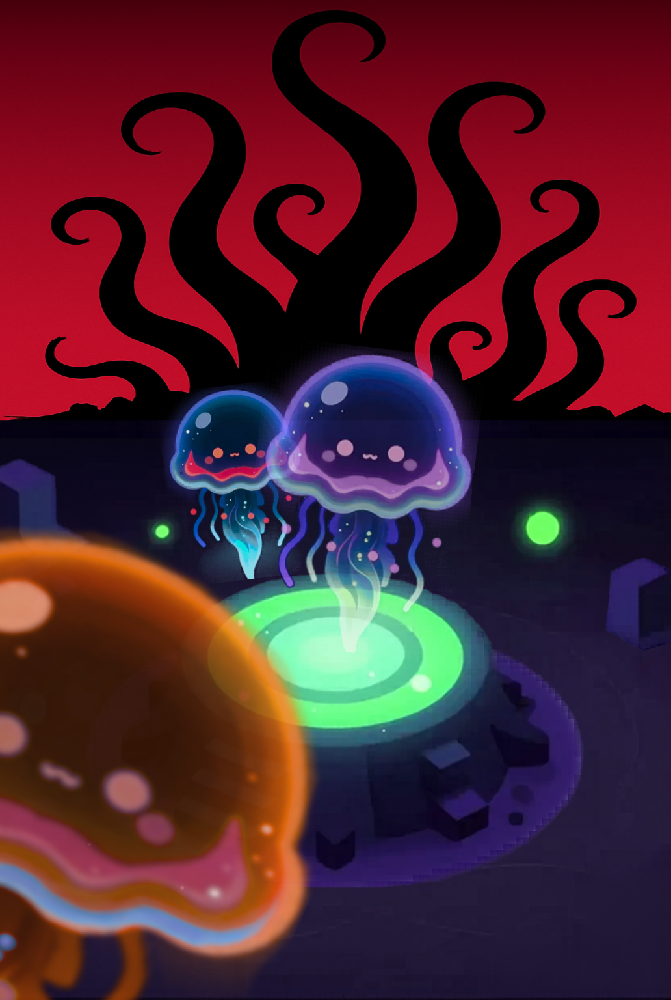

Ritual & Ruin
2v2 local co-op party game · Alpha prototype
Tiny creatures haul blood to forbidden altars, evolve into something cosmic and wrong, then hunt each other in their final moments. A 5–10 minute round about persistence in the face of uncertainty — and what tapping into something bigger than yourself costs you.
Role
Designer · Director · Solo dev
Status
Playable alpha
Theme
Persistence · Cosmic horror · Cute